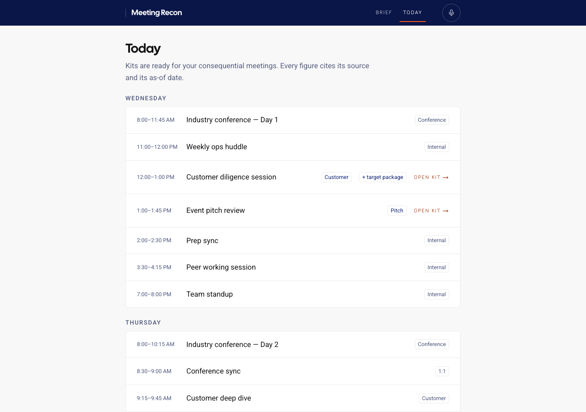
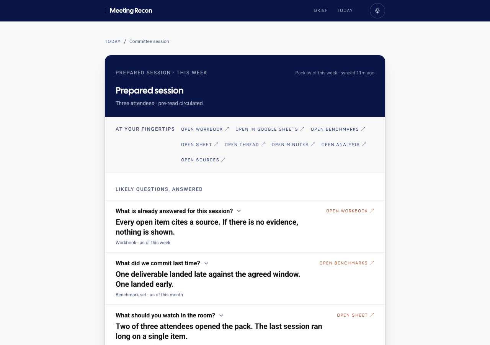

Shine · Claude Code and Cursor
Your agent keeps shipping the same page.
Shine is a skill that makes it copy a real designed product — and fail the build if the result still looks generated.
You already know the look. Gray canvas. Inter. A rounded card. A blue button. Ask for Linear. Ask for “expensive.” Ask for a briefing a CEO would actually open. You get the same costume with a new label.
That isn’t a taste problem. The model paints with whatever the component library left on the floor, which is Tailwind’s defaults. Prompting over it does nothing.
We tried a compliance officer. It printed PASS.
So the next move was gates. Wipe the default palette. Own the tokens. Fail contrast. Fail accessibility. That stopped invented hex. It did not stop the costume.
The agent would cite a real design system, ship the default gray theme, and print PASS. Completeness is not likeness. A page can hit every token and still look like every other generated page.
The missing half is a director.
Before a pixel, the agent has to open a real page that already solved the job — a briefing, a work queue, a marketing hero — and copy how that page is built, not how it was described. A second program scores whether the result still looks generated. Under 7, the build fails.
That’s how an executive briefing stops looking like a dashboard someone prompted into existence. The shots below are redacted: no names, no figures, no calendar. What you can see is the shape — a day of meetings, kits only on the ones that matter, answers already written, every number citing a source.


The uniqueness is not a new coat of paint. A briefing looks like a briefing because it was directed to one. A work queue looks like a work queue. House style is the fallback, not the product.
Install it this afternoon
Clone the repo. Symlink the skill into Claude Code and Cursor. Run node verify/doctor.mjs. The gate is that doctor. --ci is 60 checks; if a gate isn’t in it, it doesn’t exist.
MIT · one git directory · both surfaces
skill/ lines
SKILL.md 47
references/
adoption.md 158
ai-surfaces.md 160
anti-patterns.md 130
audit.md 95
brand.md 84
color-type.md 217
contracts.md 371
copy.md 148
corpus.md 109
dashboards.md 220
dataviz.md 126
diagnose.md 120
direction.md 49
ecosystem.md 154
foundations.md 193
imagegen.md 60
interaction.md 43
kits.md 114
layout.md 29
motion.md 223
patterns.md 213
performance.md 121
salesforce.md 220
taste.md 224
techniques.md 90
templates.md 56
verification.md 280
voice.md 119
voices.md 50
wireframe.md 200
4,423